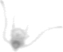

source("R/init.R")
vigns <- fs::dir_ls(
here::here(training_dir, "Plankton_small"),
type = "file", glob = "*.png", recurse = TRUE)5 Plankton_small
5.1 Egg_Small_larva
5.1.1 Small_larva
5.1.1.1 Echinoidea_pluteus
New group
In previous studies (and associated training sets), this group was not studied.
The Echinoidea is a class of Echinoderms. The main characteristics of Echinoderms are have a pentamerous radial symmetry, an internal skelleton and a mutable connective tissue. Sea stars, sea cucumbers and sea urchins can be found in this phylum. The Sea urchins are the main organisms of the class Echinoidae. The Echinoplueus is the free swimming larva of Echinoidae. This larva is small in size and has six pairs of long larval arms. It looks like an ophiopluteus. However, ophiopluteus have two longer larval arms than the others (Section 5.1.1.2). The Echinoidae has regular and irregular externals structures. The larva of regular species have all their arms in the same direction (Figure 5.1)

The larva of irregular species is a long larval arm opposite the other arms (Figure 5.2).

5.1.1.2 Ophiuroidea_pluteus
New group
In previous studies (and associated training sets), this group was not studied.
The Ophiuroidae is a class of Echinoderms. The ophioplueus is the free swimming larva of Ophiuroidae. This larva is also small in size and looks like an echinopluteus. It t has 8 long larval arms, 2 of which are very long (Figure 5.3).

5.1.1.3 Crustacea_small_larva
5.1.1.3.1 Crustacea_metanauplius
New group
In previous studies (and associated training sets), this group was not studied.
The metanauplius have a long body with six appendages ( antennules, antennae, and mandibles). On the vignettes, the six appendages are not always visible (Figure 5.5).
plot_vignettes(vigns, group = "Crustacea_metanauplius", nx = 2, ny = 2)This group is similar to the metanauplii group in ZooScanNet ( Figure 5.5 ).
5.1.1.3.2 Crustacea_nauplius
The Nauplius of the crustacea have Egg-shaped body with six appendages ( antennules, antennae, and mandibles) ( Figure 5.6 ).
plot_vignettes(vigns, group = "Crustacea_nauplius", nx = 5, ny = 5)This group is similar to the nauplii__Crustaceae group in ZooScanNet ( Figure 5.7 ).
5.1.1.3.3 Cirripedia_nauplius
New group
In previous studies (and associated training sets), this group was not studied.
In progress
This section is not yet completed
5.1.1.3.4 Cirripedia_cypris
New group
In previous studies (and associated training sets), this group was not studied.
This group is similar to the nauplii__Crustaceae group in ZooScanNet ( Figure 5.8 ). This larvae have an elongated caparace with a nauplii eye darker on the ZooScanNet images. The appendages are not always visible.
5.1.1.4 Bryozoa_cyphonautes
New group
In previous studies (and associated training sets), this group was not studied.
Bryozoa is a phylum of aquatic organisms. The main characteristics of bryozoa is the lophophore. The lophophore is ring of tentacles around the mouth.
The cyphonautes have a triangular shape. At the base of the triangle is a coronna. It is a ciliated band (Figure 5.9).
5.1.2 Egg
5.1.2.1 Mollusca_egg
New group
In previous studies (and associated training sets), this group was not studied.
In the ZooSCanNet, there are a specific group for egg of Cavolina inflexa. They are often found in groups.These eggs are cone-shaped (Figure 5.10). They have a similar shape to the adults (Section 3.1.2.1.2).
5.1.2.2 Actinopterygii_egg
Crec’hriou, Marinaro, and Planes (2015) have proposed an identification guide of pelagic eggs of mediterranean fish.
In progress
This section is not yet completed